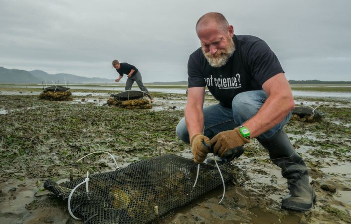
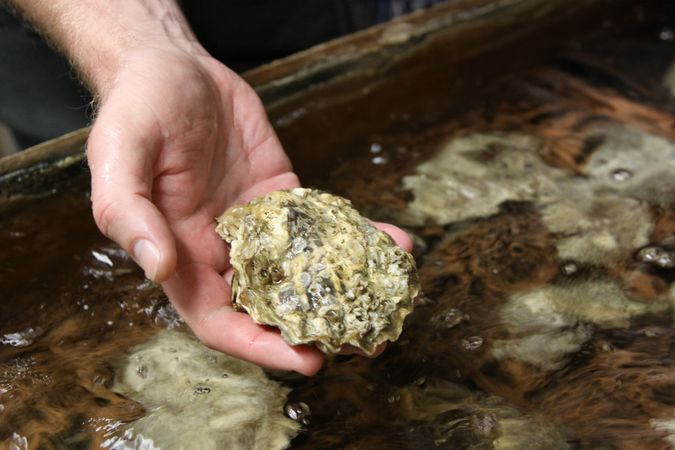
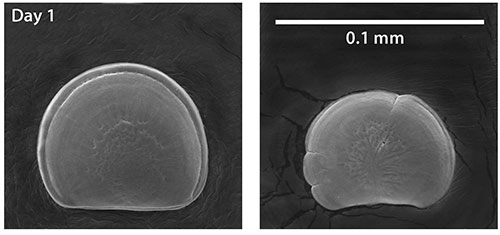

Shellfish Dependent Livelihoods and Ocean Acidification
Paving adaptation pathways in the Pacific Northwest
Economic and Ecological Importance
Shellfish form the backbone of a $280 million annual industry in the Pacific Northwest - across a chain of suppliers, hatcheries, growers, processors, distributors, and vendors.
Many indigenous peoples in the Pacific Northwest also place a special economic and cultural value on shellfish, and have done so for millennia.
Additionally, shellfish provide critical ecosystem services by filtering water and improving its quality. A single oyster can filter up to 50 gallons of water every day!
Ocean Acidification
Video by Oregon State University
The ocean naturally absorbs carbon dioxide (CO2) from the atmosphere - like a giant "carbon sink". Human activity has drastically increased the amount of CO2 in the atmosphere through the combustion of fossil fuels, and this has resulted in much more dissolved CO2 in the ocean. This change in the ocean's chemistry lowers pH and leads to a more acidified ocean.
Impacts to Shellfish
Ocean acidification (OA) affects shellfish such as oysters and mussels during critical growth and development stages. Shell-forming bivalve species rely on carbonate to build their shells, and this ability is hindered in acidified water because a lot more carbonate is bound to extra H+ ions.

The picture above is a micrograph of Pacific oyster larvae raised under normal conditions (left) and acidified water (right). Source: Waldbusser, et al. 2013
Looking Ahead
OA is occurring with greater intensity in the Pacific Northwest than anywhere else in the world. This poses a threat to ecosystems and economies that depend on them. The region is both a harbinger of things to come for other coastlines that will ultimately face OA exposure, and a laboratory for innovation on successful adaptation investments and strategies.
Forecasts
(from NOAA View Data Exploration Tool)
pH (acidity)
Aragonite saturation state (corrosivity)
Collaboration
Researchers and shellfish stakeholders at Oregon State University and the Pacific Shellfish Institute have partnered with NOAA to identify pathways for OA adaptation.
Objectives:
1) Develop interactive mapping tools to enable public understanding of current and future OA exposure
2) Build bioeconomic models of shellfish aquaculture firms facing OA risk
3) Identify technological, institutional, legislative, financial, and cultural barriers to OA adaptation
4) Identify feasible long-term pathways to OA adaptation
5) Evaluate the value of those pathways
6) Develop behavioral models to predict the likelihood of users adopting feasible OA adaptation pathways


About this story map
Overview
This story map describes the objectives of a research project at Oregon State University aimed at assessing the regional vulnerability of Pacific Northwest shellfish stakeholders to the hazard of ocean acidification.
The story map library is derived from the storymap plugin for Leaflet at http://atlefren.github.io/storymap/, and its functionality relies on both Leaflet and Bootstrap.
Data Sources
- Oyster filtration video by YouTube user kittyl0ve
- Ocean acidification video by Oregon State University
- The shellfish grower data was obtained from the Pacific Shellfish Growers Association (PCSGA) website.
- The pH and aragonite saturation forecast videos were sourced from NOAA View Data Exploration Tool.
- The favicon image was acquired from Pixabay.
- Front page video by: Brian Katz
- End scene photo by: Ginny Katz
- This story map uses the Shellfish style base map built with Mapbox.
Author: Brian G. Katz
College of Earth, Ocean, and Atmospheric Sciences | Oregon State University | 2020
Screenshots are open for use with the following citation:
Katz, B. (2020). Vulnerability and adaptation of Pacific Northwest shellfisheries to ocean acidification [Master's thesis, Oregon State University]. Oregon State University.